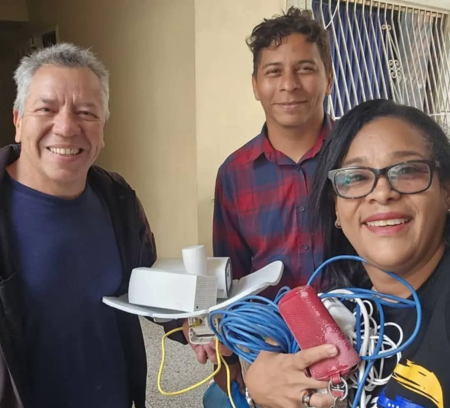

Que es VitalFi
VitalFi es una aplicacion movil (APK) de respuesta rapida pensada para apoyar la busqueda de personas en escenarios de desastre y estructuras colapsadas. Mediante tecnologia inalambrica, permite a equipos de busqueda y rescate estimar signos vitales —como la frecuencia respiratoria— bajo escombros, incluso cuando las victimas pueden estar inmoviles o en entornos de alta interferencia estructural.
Nacio durante la emergencia del terremoto del 24 de junio de 2026 en Venezuela. Fue concebida y desarrollada de forma independiente por Carlos Mundaray, quien unio fuerzas con James Marin y Maryolie Nelson para llevar las primeras pruebas de campo en La Guaira. El objetivo: transformar un dispositivo movil en una herramienta portable de apoyo cuando cada segundo cuenta.
Mision
Poner al alcance de brigadas y cuerpos de rescate una tecnologia innovadora, accesible y de alta efectividad, disenada para reducir los tiempos de localizacion de personas atrapadas y maximizar sus posibilidades de supervivencia en situaciones de desastre.
Vision
Consolidarnos como solucion tecnologica de referencia a nivel nacional e internacional en la gestion de emergencias y rescate en estructuras colapsadas, impulsando herramientas digitales al servicio de la preservacion de la vida humana.
Objeto
Proveer un sistema tecnologico inalambrico capaz de apoyar la deteccion a traves de barreras fisicas densas (como concreto u estructuras metalicas) para monitorear parametros biologicos estimados con la mayor fidelidad posible. Asi se buscan optimizar esfuerzos de salvamento y facilitar decisiones oportunas a los rescatistas en el terreno.
Nuestros valores
- Fe en Dios Ponemos a Dios primero. Reconocemos que el conocimiento, el talento y la inspiracion provienen de El, y encomendamos cada linea de codigo y cada labor de rescate a su guia y proteccion.
- Vocacion de servicio Nacemos con el proposito firme de poner la tecnologia y el conocimiento al servicio activo del projimo.
- Innovacion agil Desarrollamos soluciones de respuesta inmediata, con capacidad de adaptacion ante escenarios complejos e impredecibles.
- Resiliencia y compromiso Trabajamos superando limites tecnicos y fisicos en los momentos mas criticos de una emergencia.
A quien va dirigido
VitalFi esta pensado como herramienta aliada de quienes estan en la primera linea de respuesta:
- Brigadas de busqueda y rescate (USAR / Proteccion Civil / Bomberos) Equipos en campo que necesitan acelerar la localizacion de posibles sobrevivientes bajo escombros con tecnologia portable.
- ONG y organismos de emergencia Entidades nacionales e internacionales enfocadas en la gestion de desastres que buscan equipar brigadas con innovacion accesible.
- Gobiernos y entidades de gestion de riesgo Instituciones publicas comprometidas con modernizar protocolos de respuesta ante terremotos y colapsos estructurales.
- Aliados estrategicos e inversionistas sociales Organizaciones, empresas y fondos que buscan impulsar tecnologia de alto impacto humano y apoyar soluciones nacidas en medio de la emergencia.
Instala y prueba
Version 1.3.20 firmada. Funciona sin internet: solo Wi-Fi local del router y permiso de ubicacion (Android lo exige para leer RSSI).
Software experimental. No es equipo certificado de rescate ni sustituye protocolos USAR oficiales. Los resultados son estimaciones: verifica siempre el sitio.
Manual de uso
Guia de instalacion y operacion de la app Android.
Equipo
Equipo detras de VitalFi.
